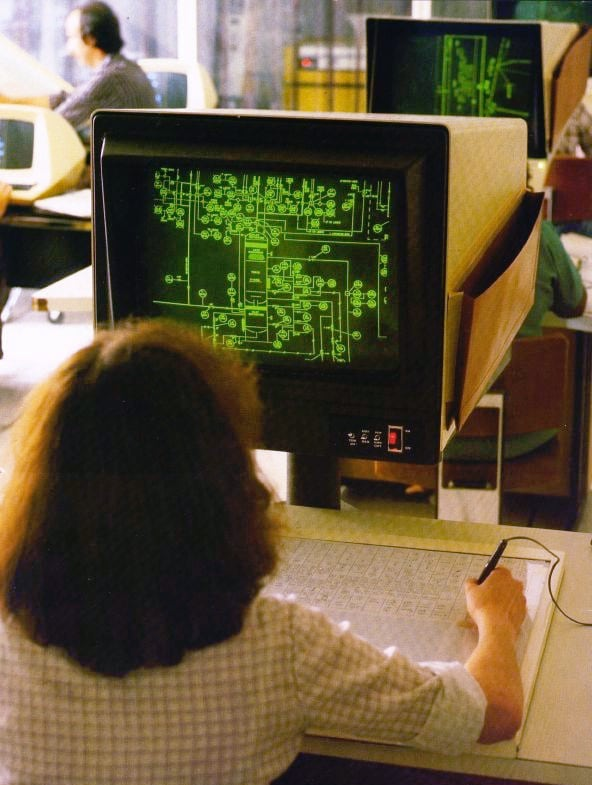
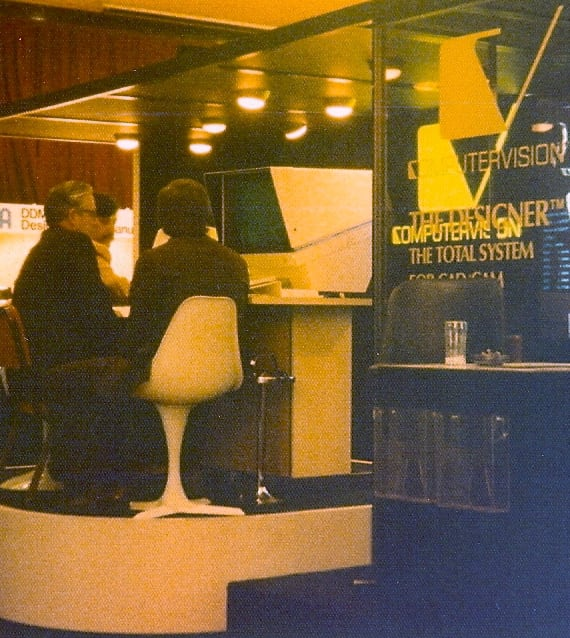

Computervision CADDS3 Workstation
A Tektronix storage-tube CAD terminal whose commands lived on a printed menu taped over the graphics tablet — the pointer as both pencil and keyboard

Overview
Computervision was founded in 1969 to make computer-aided design equipment, initially on Data General Nova computers and later on its own Nova-compatible processors. Its CADDS software ran from CADDS-1 (printed-circuit-board layout and 2-D drafting) through CADDS2 to CADDS3, which ran on the company's CGP80 and CGP100 machines in the late 1970s. A CADDS3 workstation was not a screen with a mouse. The display was a Tektronix storage-tube terminal — a vector device that holds a line drawing on its phosphor until cleared — and the primary pointing surface was a large graphics tablet with a printed menu, used both to draw and to enter command shortcuts. In the photograph that survives from a Computervision training lab around 1979, an operator works at such a station; the tablet carries a menu, the storage-tube display shows a piping and instrumentation diagram, and behind the operator sit ADM-3 terminals used to type commands. This mix — a direct-drawing surface, a menu card, and a separate command terminal — is the professional CAD interface of the era, and the direct ancestor of tablet overlays and, later, screen toolbars.
Deep dive
The defining choice of the CADDS3 workstation is that the operator's main command vocabulary lived on paper over the tablet. Instead of remembering typed command names, the user moved the puck or stylus over a printed menu sheet, picked a menu cell, and the system read that pick as a command. The tablet was thus dual-purpose: a drawing surface for geometry and a command palette. This is an early, widespread use of a digitizer for something other than position alone. It prefigured the "soft menu", but the menu here was literally hard — printed on a sheet taped to the tablet — making the command set visible and locatable by hand, and linking the act of choosing a command to the same physical motion as drawing.
CADDS3's display was a Tektronix storage tube, which writes vectors and retains the charge so the image stays on screen without the flicker of a refreshed vector display. Complex line drawings could be shown cheaply and read without flicker. The cost was that the screen had to be cleared to redraw, so editing was often incremental — erase and redraw a region — rather than animated. Storage tubes made CAD possible before affordable high-resolution raster displays, and the interaction style followed from the hardware: deliberate, static line drawings that the operator composed rather than manipulated live. It is a useful counterpoint to the museum's raster-graphics artifacts, where continuous refresh was the point.
The surviving photograph shows a CADDS3 system in a training lab, creating a piping and instrumentation diagram. CADDS3 was not demo software: it was used for industrial plant design, and by 1981 the US Navy had placed a contract worth about $63 million for Designer V hardware and CADDS4 software; Boeing bought dozens of systems for the 757/767 programme. In the training lab, engineers learned an interface that combined visual drawing with a spatial command menu and a text terminal. The ADM-3 terminals behind the operator show the older command-line workflow continuing alongside the new one — a hybrid that persisted precisely because each modality did something the other could not.
The idea of a digitizer with a printed command template migrated to microcomputers in the early 1980s, most visibly with AutoCAD's tablet menu overlays, where a printed grid of commands was taped over the digitizer. From there, screen toolbars and icon palettes inherited the logic: put commands in spatial regions and let pointing replace typing. CADDS3 is an early, industrial-scale expression of that grammar. As a museum artifact it matters less as a "first" than as evidence of how graphics hardware, input device, and command vocabulary were designed together to serve a specific profession.
Computervision built its own GPU for hierarchical display-list rendering in 1980, produced a Display Control Unit with a large colour raster display in 1983, and was the first large customer for Sun Microsystems' Unix workstations. Its CADDS line ran, through many iterations, into the twenty-first century. The CADDS3 workstation is a valuable entry point to that history because it shows the pre-raster, pre-WIMP era of professional graphics — a workstation built from a minicomputer, a storage-tube display, and a tablet — and because it shows that "direct manipulation" of a drawing and "command entry" were not alternatives but partners.
Team & pioneers
- Computervision Corporation. Founded 1969 in Bedford, Massachusetts, by Martin "Marty" Allen and Philippe Villers; built CADDS and the CGP series of graphics minicomputers with the CGOS operating system.
- Patrick J. Hanratty. Pioneer of CAD software whose early drafting code, acquired by Computervision from S3 Corporation around 1973, underpinned the CADDS line.
- Tektronix. Manufacturer of the storage-tube display terminals used at CADDS3 workstations.
Media

Sources
- Wikipedia — Computervision (founding; CADDS-1 for PCB and 2-D drafting; CADDS3 on CGP80/CGP100 with Tektronix storage tubes and graphics tablets with menus; CADDS3 from Hanratty/S3 code; Boeing 757/767; Navy contract; GPU 1980; DCU 1983; first major customer for Sun)
- Wikimedia Commons — File:Computervision piping.agr.jpg (Arnold Reinhold, CC BY-SA 3.0): CADDS3 system used to create a piping and instrumentation diagram in a training lab, circa 1979; Tektronix 19-inch storage tube; tablet for drawing and command shortcuts; ADM-3 terminals for typing commands
- Wikimedia Commons — File:ComputervisionDesigner.agr.jpg (Arnold Reinhold, CC BY-SA 3.0): Computervision Designer CAD system at a trade show, 1978
- CADhistory.net — David Weisberg, "Computervision" (company and product history)